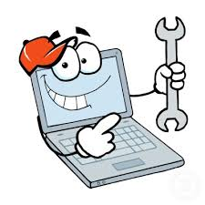
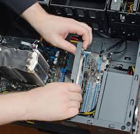

¿QUE ES EL MANTENIMIENTO CORRECTIVO?
El mantenimiento correctivo es un tipo de mantenimiento realizado por los técnicos para corregir un mal funcionamiento de equipos, maquinarias y sistemas. Su objetivo es restablecer el buen estado de funcionamiento y el nivel de rendimiento especificado de los activos de la empresa. El mantenimiento correctivo se denomina a veces mantenimiento reactivo porque se pone en marcha cuando ya se ha producido un fallo en la máquina..
¿COMO HACER UN MANTENIMIENTO CORRECTIVO?
Este mantenimiento se realiza luego de que ocurra un fallo o avería en el equipo que por su naturaleza no pueden planificarse en el tiempo estas acciones pueden incluir reparaciones, reemplazo de piezas, ajustes o recalibración. En algunos casos, puede ser necesario detener temporalmente las operaciones para llevar a cabo el mantenimiento correctivo
EJEMPLOS DE MATENIMIENTOS CORRECTIVOS
Los procedimientos de mantenimiento correctivo de computadoras varían según el equipo, los recursos asignados y los requisitos de la empresa, entre otros factores. Por ejemplo, las máquinas que utilizan tecnología moderna pueden reducir el tiempo que se tarda en diagnosticar un problema y disminuir el coste de la reparación, manteniendo los tiempos de funcionamiento. A continuación se presenta un proceso general de pasos de mantenimiento correctivo de una computadora para ayudar a los gestores y técnicos a empezar:
Paso 1: Estar al tanto de un mal funcionamiento detectado en el sistema

Una vez detectado, el fallo de la máquina debe ser confirmado por los técnicos in situ. Si se demuestra que no se ha encontrado ningún fallo, el sistema suele volver a funcionar. Sin embargo, si se confirma que se ha producido una avería, deben tomarse medidas de mantenimiento correctivo. Normalmente, antes de llevar a cabo las tareas de mantenimiento correctivo de una computadora también se debe rellenar un informe de fallos.
Paso 2: Localizar el defecto en un equipo específico del sistema

La localización de averías, a veces denominada aislamiento de averías, es el proceso de determinar la ubicación de una avería en la medida necesaria para efectuar la reparación. En el contexto del mantenimiento correctivo, es el acto de señalar el defecto a un equipo específico dentro del sistema. Los técnicos tienen que identificar en qué equipo de todo el sistema se produjo realmente el fallo
Paso 3: Diagnosticar el problema de un componente concreto del equipo

Una vez identificada exactamente la avería, se procede al diagnóstico de la pieza defectuosa en el equipo. Para determinar la causa de la avería se suelen utilizar determinados equipos, programas informáticos u otros medios documentados. En la mayoría de las máquinas, una capacidad de prueba integrada con componentes de hardware y/o software existentes puede ayudar a diagnosticar el problema de una pieza defectuosa.
Paso 4: Reparar o sustituir la pieza o elemento defectuoso del equipo
En el proceso de mantenimiento correctivo, es cuando los técnicos aplican correcciones como la reparación o la sustitución de piezas de la máquina, entre otras acciones de mantenimiento correctivo. Este paso también puede denominarse “corrección de fallos”, en el que se realizan tareas de mantenimiento para rectificar el mal funcionamiento. Las medidas básicas de mantenibilidad, como el tiempo medio de reparación o el tiempo de mantenimiento correctivo, suelen incluir este paso.
Paso 5: Alinear y calibrar la pieza reparada o nueva en relación con el sistema

Después de corregir el elemento defectuoso, suelen seguir la alineación y la calibración, que marcan el inicio de la comprobación, o la serie de pruebas del elemento para determinar su estado o condición. Es crucial realizar los ajustes necesarios cuando se restablece cualquier elemento a una operación específica. Además, para eliminar las desviaciones es necesario comparar un aparato de medición con un patrón establecido y realizar una alineación posterior.
Paso 6: Limpiar y lubricar el equipo como corresponde

Después de la calibración, se suele realizar un control de la contaminación y la lubricación para ayudar a mantener el artículo en buenas condiciones de funcionamiento. Es fundamental utilizar un lubricante limpio y en la cantidad adecuada. La limpieza a fondo de los equipos y sus componentes no sólo puede facilitar la detección de posibles problemas y prolongar su vida útil, sino que también puede contribuir a mejorar la fiabilidad y reducir los costes.
Paso 7: Validar el rendimiento antes de devolver el sistema al servicio
Por último, hay que realizar pruebas para comprobar que el rendimiento del artículo ha alcanzado su estado especificado. Este paso completa la comprobación y la muestra general de un proceso de mantenimiento correctivo. Si los resultados revelan que el elemento en relación con el equipo funciona satisfactoriamente, entonces el sistema puede volver al servicio y las operaciones comerciales pueden reanudarse.
Envie su respuesta